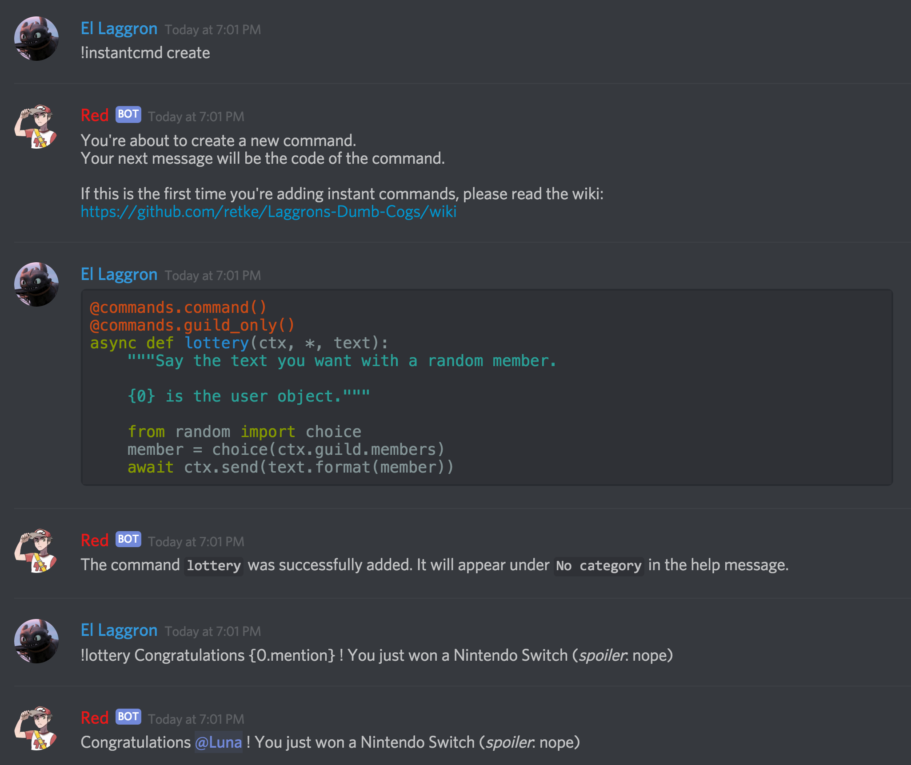

InstantCommands¶
Note
These docs refers to the beta 2b version.
Make sure you’re under the good version by typing [p]cog update.
This is the guide for the instantcmd cog. Everything you need is here.
[p] is considered as your prefix.
Installation¶
To install the cog, first load the downloader cog, included in core Red.:
[p]load downloader
Then you will need to install the Laggron’s Dumb Cogs repository:
[p]repo add Laggrons-Dumb-Cogs https://github.com/retke/Laggrons-Dumb-Cogs v3
Finally, you can install the cog:
[p]cog install Laggrons-Dumb-Cogs instantcmd
Warning
The cog is not loaded by default. To load it, type this:
[p]load instantcmd
Usage¶
InstantCommands is designed to create new commands and listeners directly from Discord. You just need basic Python and discord.py knowledge.
Here’s an example of his it works:
Here’s a list of all commands of this cog:
instantcommand¶
Syntax:
[p][instacmd|instantcmd|instantcommand]
Description
This is the main command used for setting up the code. It will be used for all other commands.
instantcommand create¶
Syntax:
[p]instantcommand create
Description
Creates a new command/listener from a code snippet.
You will be asked to give a code snippet which will contain your function.
It can be a command (you will need to add the commands decorator) or a listener
(your function name must correspond to an existing discord.py listener).
Tip
Here are some examples
@roleset.command()
@commands.command()
async def command(ctx, *, argument):
"""Say your text with some magic"""
await ctx.send("You excepted to see your text, "
"but it was I, Dio!")
async def on_reaction_add(reaction, user):
await reaction.message.add_reaction('❤')
await message.channel.send("Here's some love for " + user.mention)
Note
Here are the available values for your code snippet:
discordext.commands
asyncioinspecttracebackrandomredbot.corechecksConfigutils.chat_formatting.pagify
It isn’t recommanded to use the Config value for now.
A future release should give a ready Config.Config object.
instantcommad delete¶
Syntax
[p]instantcommand [delete|del|remove] <name>
Description
Remove an instant command or a listener from what you registered before.
Warning
Listeners won’t be removed from discord.py uneless you restart, since their function to remove listeners doesn’t seem to work. Restart the bot to make sure the listener is well removed.
Arguments
<name>The name of the command/listener.
instantcommand info¶
Syntax
[p]instantcommand info [command]
Description
List all existings commands and listeners created with InstantCommands.
You can give a command/listener name to show its source code.
Note
This only works with InstantCommands’ commands and listeners.
Arguments
[commands]The command/listener name to get the source code from. If not given, a list of existing commands and listeners created with the cog is shown.
Frequently Asked Questions¶
Note
Your question is not in the list or you got an unexcpected issue?
You should join the Discord server or post an issue on the repo.
It’s written in the help message that I can add a listener. How can I do so?¶
Instead of giving a Command object, just
give a simple function (don’t put the command decorator) and make sure
its name is matching the lowercased Discord API listeners.
My command was added but doesn’t respond when invoked.¶
If a command is not invoked, this is most likely due to missing arguments.
Please check that you only have the ctx
argument and no self argument.
Can I use Config in my command?¶
Yes you can. The Config module is already imported,
you just need to use it as in a cog.
..tip:: Here’s an example
@commands.command(name="test") async def my_command(ctx): config = Config.get_conf(cog_instance="InstantCommands", identifier=42) # use anything but 260 for the identifier # since it's the one used for the cog settings config.register_guild(**{ "foo": None }) await config.guild(ctx.guild).foo.set("bar") await ctx.send("Well done")
How can limit a command for some users?¶
You can use the checks module, like in a normal cog.
Tip
Here’s an example
@commands.command()
@checks.admin_or_permissions(administrator=True)
async def command(ctx):
# your code
How can I import a module without problem?¶
Just import, but inside the function. You can use the __import__()
method or use the from ... import ... built-in method.
Tip
Here’s an example
@commands.command()
async def command(ctx):
from redbot.core import modlog
import time
__import__('random').randint
# your code